STUDIO A. ／ A 組
DAY 3 / 3業務部 · 門市銷售數據 ＋ 財會
把你的做法，
變成它的本事。
變成它的本事。
STUDIO A ｜ Day 3 / 3 —— 流程包成 skill · 知識放進第二顆腦 · 報告自己生。
講師 余文皓
匯流顧問有限公司
2026 / 08 / 19
STUDIO A · AI 工作流導入 · A 組
回收 FLUX開場
部門的系統上線了。
今天 —— 回到你自己的。
今天 —— 回到你自己的。
回收 FLUX · 20 MIN
2
回收 FLUX先分清楚
你的桌上，一直有兩份東西。
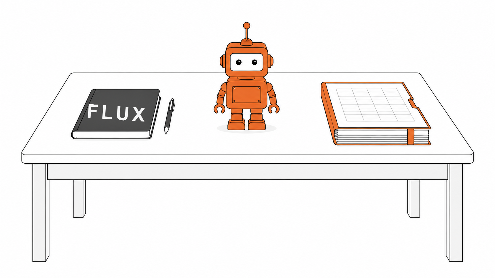
桌上 · 01
你的筆記本 —— FLUX 工作資料夾
D1 就發給你了：你的專案、你的任務、你的一天。規矩你自己說了算 —— 封面是 CLAUDE.md，你家的手冊。
桌上 · 02
部門的檔案（副本）
D2 借回來加工的：大家的頁面、部門的數字。要還（push），別人等著用 —— 封面是 CLAUDE.md，部門的合約。
桌上 · 03
助理 —— 只有一位
面向哪份，就在哪上班。上工第一件事：讀封面的規矩 —— 所以兩份封面，本來就不一樣。
兩份封面、兩套規矩 —— 他上工，只讀他面向的那份。
3
回收 FLUX · 兩份東西
回收 FLUX先考一題
先考他一題 —— 只有你的筆記本知道的事。
動手 · 開口考
① 打開你的工作資料夾（VS Code）
② 叫出 Claude
③ 問他一句：
② 叫出 Claude
③ 問他一句：
我上次收工是什麼時候？
記了什麼？▍
記了什麼？▍
對答案 —— 這就是驗收
他翻你的收工紀錄 —— 說出哪一天、記了什麼
對不對 —— 你自己心裡有數
隔壁答的跟你不一樣 —— 因為這本是你的
答出來了。那 —— 他上工前，先讀了哪一份 CLAUDE.md？
4
回收 FLUX · 考一題
回收 FLUX站對地方
開錯窗 —— 東西會生錯地方。
他讀了哪份？ · 照貼、問他自己
你現在在哪個資料夾、讀的是哪份 CLAUDE.md？
你的筆記本
—— 你剛剛開的，就是這扇
你說：「幫我更新部門的數字。」
他寫在你自己家 ——
部門那邊，什麼都沒發生。
部門那邊，什麼都沒發生。
✗ 公事，根本沒送到
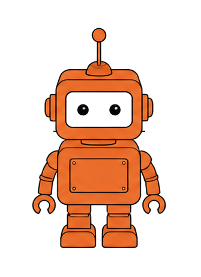
同一位助理
部門的檔案
你說：「幫我記一下 —— 明天要跟店長談排班。」
你的私人備忘，寫進了公家檔案 ——
下次 push，全班都收到。
下次 push，全班都收到。
✗ 私事，變成全班的
要送數字回部門？不用換窗 —— 跑腿的是他。下一頁，教他認路。
5
回收 FLUX · 一扇窗
回收 FLUX動手 · 搭橋
教他認路 —— 以後送數字，不用自己跑。
① 搭橋 · 照貼
幫我在 CLAUDE.md 加一段「送數字回部門」的規則：當我說「把數字送回部門」，你就 ① 去 ~/Desktop/studioa-dashboard ② 先 git pull，讀那個資料夾的 CLAUDE.md，照它的規矩做 ③ 數字只寫進我自己的表 —— 只新增，不刪、不動別人的 ④ 寫完提醒我按「確認」。其他部門的事，提醒我去那個資料夾開工。
② 驗收 · 照貼（乾跑 —— 今天不真的送）
假裝我現在要送數字回部門 —— 走一遍給我看，到「要寫進資料庫」之前停下來，先不要真的寫。
過了 ＝ 橋通了
他會：走去部門資料夾 → pull → 讀合約 → 說出你的表 → 跟你要數字 → 停。第一次他會問「可以動這個資料夾嗎」—— 答應一次就好。
從今天起 —— 送數字，一句話、他來跑。
6
回收 FLUX · 搭橋
回收 FLUX三天走到哪
三天，三步。
DAY 1 · 08/05
你的系統
開起來了
開起來了
開工收工，每天在跑；
自己的週報，30 分鐘一份。
自己的週報，30 分鐘一份。
DAY 2 · 08/12
部門的系統
上線了
上線了
大家共用、有門禁、
自己就改得動。
自己就改得動。
DAY 3 · 今天
？
前兩步，你們都做完了 —— 第三步，就是今天。
7
回收 FLUX · 三日地圖
回收 FLUX第三步
第三步：讓它越用越強。
第一題 · 40 分
用 AI 做
知識管理
知識管理
查到的、學到的 —— 放得進、
找得到，用問的就出來。
找得到，用問的就出來。
第二題 · 75 分
把流程
做成 skill
做成 skill
教過一次的事 ——
之後一句話，整套照跑。
之後一句話，整套照跑。
第三題 · 60 分
用 AI 做
投影片
投影片
內容給它 ——
整份直接生出來。
整份直接生出來。
上週說好的三題 —— 今天，全部兌現。
8
回收 FLUX · 今天三題
第一題東西放哪
系統會跑了 ——
那你查過的東西呢？
那你查過的東西呢？
前兩天，你把要做什麼裝進去了。
接下來這 50 分鐘，裝的是你讀過、查過、判斷過的東西 —— 而且要讓它半年後還找得回來。
接下來這 50 分鐘，裝的是你讀過、查過、判斷過的東西 —— 而且要讓它半年後還找得回來。
知識管理 · 50 MIN
9
知識管理這一站兩件事
這 50 分鐘 —— 你會帶走兩樣東西。
01
一個半年後還找得到的知識庫
不是暫存、不會被歸檔、不會結案搬走。你今天查的東西，明年還調得出來。
02
用你自己的題目跑一次
查完、拆完、存進去 —— 卡片留在你的 Atlas，每一張都指得回原文。
這 50 分鐘怎麼走
01
Atlas 是什麼
為什麼只有它不會被清掉
02
一張卡長什麼樣
一張卡只放一個東西
03
兩個暗號
讓它幫你查、幫你存
04
換你的題目
自己跑一次查 ＋ 存
帶走的不是筆記是一套會繼續長的東西 —— 今天查的，下次不用重查。
10
知識管理 · 這一站兩件事
先想一個場景你查過的東西散在哪
上個月查過的那個方案 —— 現在找得到嗎？
同事
上個月那個舊換新加購方案，條件到底是怎麼算的？客人在等。
你
等我找一下 —— 翻信箱、翻桌面那個「暫存」資料夾、翻上次的群組訊息⋯⋯
我明明查過的⋯⋯那份原廠公告到底存到哪去了。
不是你查得不夠是你查過的東西沒有地方放 —— 找不到就重查一次，等於沒查過。
11
知識管理 · HOOK
知識管理先記住這一句
你查到的東西 ——
預設是會不見的。
預設是會不見的。
除非你把它放進一個不會被清掉的地方。
那個地方在哪 · 等一下就知道
12
知識管理
為什麼會不見那幾個資料夾
因為你有的資料夾 —— 全部是暫時的。
Cockpit/Daily
每個月歸檔一次，舊的收進 archive
暫時
Efforts/Projects
案子結案，整個資料夾搬走
暫時
Efforts/Areas
一直堆，堆到後來自己也找不到
暫時
Inbox
本來就是要定期清空的
暫時
沒有一個是設計來放「半年後還要用」的東西那 —— 半年後還要用的，到底該放哪？
13
知識管理 · 全部暫時
別人怎麼解的這問題不新
這問題 ——
六十年前就有人解過了。
六十年前就有人解過了。
ZETTELKASTEN

《卡片盒筆記》
Sönke Ahrens 寫的一本書 —— 講的是德國社會學家 Luhmann 的做法。
他用一盒卡片，一輩子寫出 70 本書 ＋ 400 篇論文。
他的做法只有三件事
01
一張卡只寫一個東西 —— 不把三件事塞進同一張。
02
卡跟卡互相連起來 —— 連久了就變成一張網，不是一疊紙。
03
要用的時候去翻那張網 —— 不是從零開始想。
這套做法搬進電腦裡 —— 卡片變成檔案，連結變成點得動的連結。
14
知識管理 · 卡片盒筆記法
那套做法 · 第 1 條一張卡只放一個
一張卡只寫一個 —— 怎樣算一個？
一張好的卡 · 四個條件
01
只放一個概念
02
單獨拿出來看得懂
03
別的案子也引用得到
04
檔名就是那句結論
一句話講得完 —— 就夠小了。
✕ 一則會議紀錄，塞了兩件事
跟原廠窗口確認：舊換新用當月公告版，展示機折舊要跟財會對.md
↓ 它們不會同時被用到
✓ 舊換新條件一律以原廠當月公告為準.md
跟客人報價的時候查它
✓ 展示機折舊的窗口是財會.md
對帳的時候查它
15
知識管理 · 一卡一概念
知識管理一張卡的三段
一張卡 —— 三段，就這樣。
① 檔名 · 就是那句結論
台美 Trade In 估價獨立不可互推.md
光看檔名就知道裡面在講什麼 —— 不用打開。
② 上半 · 標籤跟連結
這張是哪一類、掛在哪個主題下、跟哪幾張有關。
③ 下半 · 內容
為什麼是這個結論、證據、還有 —— 從哪份來源拆出來的。
卡片打開的樣子
台美 Trade In 估價獨立不可互推.md
---
up: "[[Apple Trade In MOC]]"
collection: Statements
related: "[[Apple Trade In 台灣折抵金額表 2026-08 版]]"
created: 2026-08-17
says: "台美估價各自獨立、走向可相反，
不能拿美國調價新聞推台灣金額"
---
台美 Trade In 估價各自獨立調整，同一波
走向可以完全相反 —— 台灣金額一律以
台灣官網估價工具為準。
## References
- [[2026-08-17-Apple Trade In 台灣方案研究]]
16
知識管理 · 一張卡
卡片放哪就四樣
拆出來的卡放哪？—— Dots。旁邊還有三樣。
資料夾 01
Sources
完整的原始來源
像書櫃 —— 整份原廠公告、整篇文章、整支影片。一個來源一個檔。
例：原廠的方案公告
資料夾 02
Dots
一張卡一個概念
像你在書上畫的重點 —— 從整份裡面挑出來、單獨拿出來還看得懂的那幾句。
例：報價要標估價日期和機況
資料夾 03
Maps
同一個主題的索引
像你自己整理的書單 —— 同一個主題的卡累積到三張以上，就建一張。
例：促案追蹤 · 主題索引
＋ 一本帳
log.md
歸檔記帳本 —— 哪天收了哪份、拆了哪幾張，它自己記一行。
17
知識管理 · Atlas 四樣
還空著的那個資料夾ATLAS · 永久
這四樣，住在同一個資料夾 —— Atlas。
~/FLUX-standard
├── Cockpit/
├── Efforts/
├── Inbox/
├── Atlas/ ★
│ ├── Sources/ 完整來源
│ ├── Dots/ 一卡一概念
│ ├── Maps/ 主題索引
│ └── log.md 歸檔記帳
├── Calendar/
├── Guides/
└── Templates/
規則 01
進來的東西 —— 不歸檔、不清空、不搬走。
半年、一年、三年，它都在原地。
規則 02
放的不是事件，是原則 —— 不會過期的那種知識。
「這個月折抵多少」會過期；「報價要標估價日期和機況」不會。
這兩週亮著的是 Cockpit 跟 Efforts —— 你的工作。今天亮起來的是 Atlas —— 你查過的東西。同一個資料夾、同一個視窗，工作跟知識住在一起。
18
知識管理 · ATLAS
知識管理兩個資料夾的抽屜
Sources 跟 Dots 裡面，再分抽屜 —— 7 個和5 個。
Sources
整份東西進來，看它是什麼型態，就放哪個抽屜。
Reports/
報告書
Papers/
論文
Articles/
網路文章
Books/
書
Videos/
影片、線上課
Talks/
演講、研討會
⋯
不夠用再加
Dots
從整份裡拆出來的重點，看它是哪一種重點，就放哪個抽屜。
Statements
一句用得上的結論
報價要標估價日期和機況
Things
一個名詞、一套東西
Apple Trade In 動態估價
People
一個人、一個窗口
原廠的方案窗口
Questions
還沒想清楚的問題
舊報價單要不要跟著改
Quotes
別人講過的原話
客人當場說的那句
19
知識管理 · 7 類 × 5 類
知識管理 · 動手打開你的 ATLAS
現在換你 —— 打開你自己的 Atlas。
~/FLUX-standard / Atlas
├── Sources/ 完整來源
│ └── Books/2026-01-15-Atomic Habits.md
├── Dots/ 一卡一概念
│ ├── Things/ 12 Week Year · Lead 與 Lag 指標 ★
│ ├── Statements/ 執行力贏過完美計畫
│ ├── Questions/ 習慣是怎麼形成的
│ ├── Quotes/ 媒介即是訊息
│ └── People/ Brian Moran · Nick Milo
├── Maps/ 主題索引 PKM · Productivity
└── log.md 歸檔記帳本
1
在左邊點開 Atlas
認出三個資料夾 —— Sources / Dots / Maps —— 和一本 log。
2
點開 Dots / Things / Lead 與 Lag 指標
你一個小時前才學過的東西 —— 裡面已經有一張卡。上半是標籤跟連結、下半是內容。
3
看一下檔名
檔名不是「筆記 1」，是一句話的結論 —— 光看檔名就知道裡面在講什麼。
現在這十幾張是跟系統一起給你的範例。等一下你會加進第一張自己查的。
三個資料夾、一張卡 —— 你現在知道東西存進來會長在哪裡了。
03:00
20
知識管理 · 動手 · 打開你的 Atlas
知識管理自己跑的話
這套方法自己跑 —— 每收一份，都是這些事。
01
先判斷 —— 這份，值不值得留？
02
想位置 —— 整份放哪個資料夾？
03
拆卡 —— 拆成幾張？每張都得問一次「怎樣算一個」。
04
寫卡 —— 每張下檔名、填三段。
05
歸位 —— 12 個抽屜選一個，還要想跟哪幾張連。
06
記帳 —— log 補一行。
而且這只是一份的量
今天查一件事 —— 這六步。
一週查十件 —— ×10。
一週查十件 —— ×10。
哪天忙、跳過一次 —— 下次變兩份。
停一陣子沒整理，整套開始對不上。
停一陣子沒整理，整套開始對不上。
方法六十年前就有了 —— 撐下去的人，不多。
21
知識管理 · 自己跑的話
知識管理那誰來做
現在 —— 這一整套，不是你來做。
你 · 出手的
兩件事 —— 丟進來、說一聲
整份丟進來 —— 報告、文章、會議記錄，原樣丟
說一聲要收 —— 剩下的不用管
你出的是判斷：這份值不值得留、這個結論對不對。
它 · 接手的
剛剛那六步 —— 全部它來
放哪個資料夾 —— 它判斷
卡 —— 它拆，檔名它下、三段它填
抽屜 —— 它歸，連結它接
log —— 它記
結構自己會長 —— 停多久都不會散
你不用變成整理的人你只要會講兩個詞 —— 下一頁就是那兩個詞。
22
知識管理 · 誰整理
知識管理要記的就這兩個
要記的 ——
就這兩個詞。
就這兩個詞。
[研究]
先翻你的 Atlas、再上網補
查完寫成一份研究報告 → 存進 Inbox
查完寫成一份研究報告 → 存進 Inbox
[歸檔]
把手上這份拆成卡
拆完自己歸位、自己連好 → 落進 Atlas
拆完自己歸位、自己連好 → 落進 Atlas
等一下兩個都會動手 —— 先查、再拆。
知識管理 · 兩個暗號
23
知識管理 · 兩個暗號
知識管理 · 暗號一跟自己 GOOGLE 差在哪
[研究] 跟你自己 Google —— 差 三件事。
差別
你自己 Google
用 [研究]
從哪裡開始查
—
每次都從零開始。你去年查過同一題，它不知道。
▸
先翻你自己的 Atlas —— 先告訴你「這題你已經有這幾張了」，再去補沒有的。
查回來的東西
—
十幾個分頁，自己讀、自己比、自己判斷哪個是新的。
▸
幫你比對過 —— 哪些是新的、哪些跟你舊卡重複、哪些對不上。
查完之後
—
關掉分頁就沒了。下次要用，再查一次。
▸
整理成一份、直接存起來 —— 下次同一題，它從你這份接著往下走。
第三件事最值錢Google 查十次是十次從零開始；這個查十次，是第十次站在前九次上面。
24
知識管理 · 暗號一 · 差三件事
動手 · 暗號一第一次跑 [研究]
拿舊換新方案來試 —— 這題每個月都要重問。
方案會改版。改了版，你跟客人報的條件就對不上 —— 而你得先知道它換了。
複製這一行 · 貼進 Claude · 按 ENTER
> [研究] Apple 官方舊換新（Trade In）方案，目前最新內容是什麼、什麼時候更新的、跟上一版差在哪裡。查完把完整報告存到 Inbox。
等它跑 · 看它走這條
01 翻你的 Atlas
02 上網補你沒有的
03 給你一段摘要
04 報告存進 Inbox
問句裡問了三件事 —— 內容、時間、差在哪。摘要回來 —— 看它答得出來的有幾件、答不出來的它有沒有說。
讓它跑完 —— 摘要回來，對一下上面那三件事。
05:00
25
知識管理 · 暗號一 · 動手查
知識管理 · 產出 ①報告躺在 INBOX 裡
它查完的東西 —— 躺在 Inbox 裡等你。
Inbox / Apple 官方舊換新 Trade In 方案研究.md
Apple 官方舊換新（Trade In）方案研究
## 你問的三件事
最新內容
iPhone／iPad／Mac／Watch 都收；台灣回收夥伴是愛鋒派、Alchemy —— 舊資料寫的 Likewize 已過時
什麼時候更新
目前是 2026 年 8 月版 —— 約每季調一次，下次推估 11 月
跟上一版差在哪
30 款 iPhone：16 漲、6 跌、8 持平；台美走向不一致 —— 不能拿美國新聞推台灣
## 資料來源
6 個來源 —— Apple 官網 ×3、MacRumors、TVBS⋯ 每一條都掛著連結。
為什麼長這個形狀
你問了三件事，它就照三件事排 —— 不是丟一大段文章給你，讓你自己在裡面找答案。
查得到的，掛著來源；
查不到的，它標 ⚠️ 不確定 —— 沒有硬生。
（官網的估價截止日抓不到 —— 它直接寫「建議人工確認」。）
查不到的，它標 ⚠️ 不確定 —— 沒有硬生。
（官網的估價截止日抓不到 —— 它直接寫「建議人工確認」。）
這份現在還在 Inbox —— 而 Inbox 是會被清空的。
下一步：把它搬進 Atlas。那就是第二個暗號要做的事。
下一步：把它搬進 Atlas。那就是第二個暗號要做的事。
26
知識管理 · 產出 ① · 報告進 Inbox
知識管理 · 暗號二整份 → 拆成卡
第二個詞 [歸檔] —— 把那一份拆成卡。
複製這一行 · 貼進 Claude · 按 ENTER
> [歸檔] 我剛剛存到 Inbox 的那份研究
不用打檔名 —— 它自己會去 Inbox 抓最新那份。
跑完之後 · 你的 Atlas 多了這些
Sources/Articles/
2026-08-17-Apple Trade In 台灣方案研究.md
原文留底
Dots/Things/
Apple Trade In 台灣方案採線上寄回與直營店雙管道.md
Dots/Things/
Apple Trade In 台灣折抵金額表 2026-08 版.md
Dots/Statements/
Apple 約每季調整 Trade In 估價.md
Dots/Statements/
台美 Trade In 估價獨立不可互推.md
Dots/People/
愛鋒派與 Alchemy 是 Apple 台灣 Trade In 合作商.md
Maps/
Apple Trade In MOC.md
同主題滿 3 張 · 自己新建
log.md
多一筆：來源、拆了哪幾張、還有什麼待確認
一份報告 —— 進去變成 1 份原文 ＋ 5 張卡 ＋ 1 張索引，每一張都回得去原文。
05:00
27
知識管理 · 暗號二 · 拆成卡
知識管理 · 產出 ②挑一張打開來看
挑其中一張打開 —— 整張卡就是一個純文字檔。
STATEMENTS
Apple 約每季調整 Trade In 估價.md
---
up:
- "[[Apple Trade In MOC]]"
collection: Statements
related:
- "[[Apple Trade In 台灣折抵金額表 2026-08 版]]"
created: 2026-08-17
says: "2026 年 3、5、8 月各調價一次、
約每季一波；下次調整推估 2026-11"
---
Apple 官網 Trade In 折抵估價約每季調整一次。
2026 年已知調價點：3 月初（3/2）→ 5 月底（5/27）
→ 8 月初（8/6）。依此節奏，**下次調整推估約
2026-11**。
## 證據
- 美國：MacRumors 2026/08/06 報導官網調價
- 台灣：TVBS 2026/08/08 報導同波調整
- ⚠️ 官網「截至日期」標註不確定：金額表為 JS
動態載入、工具抓不到 — 需人工開瀏覽器確認
## 應用
- 想換機時對照調價節奏：離下次調價點近、
可評估等新一波估價再決定
- [[Apple Trade In 台灣折抵金額表 2026-08 版]]
是時效卡、每波調價後需更新
## References
- [[2026-08-17-Apple Trade In 台灣方案研究]]
三段都在 —— 檔名是那句結論、上半標籤跟連結、下半內容：證據、應用、哪來的（References）。半年後打開，還是這張卡。
28
知識管理 · 產出 ② · 打開一張卡
知識管理 · 產出 ②換一個看的方式
同一批卡 —— 在 Obsidian 裡長這樣。
每張卡的檔案都是純文字。用 Obsidian 打開你的工作資料夾 —— 這是清單裡金額表那張：排好版、點得動。
讀 ⇄ 改 · 一鍵切換
現在是「讀」。切到「改」—— 看到的就是上一頁那種原始文字。
畫面上還有什麼
・左邊 —— 你的資料夾，跟檔案總管裡同一批
・「屬性」 —— 歸檔時它自己填的，每個都點得動
・右上關係圖 —— 剛剛歸檔的那批，已經連成一張小網
・「屬性」 —— 歸檔時它自己填的，每個都點得動
・右上關係圖 —— 剛剛歸檔的那批，已經連成一張小網
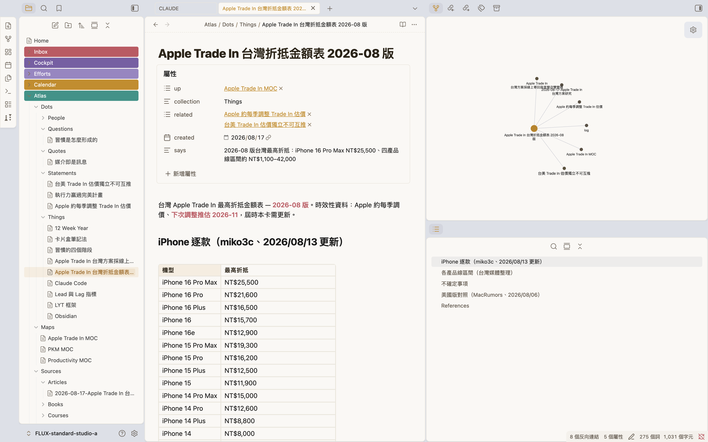
看起來不一樣，檔案是同一個Obsidian 只是一種看的方式 —— 換任何一個軟體打開，字一個都沒少。
29
知識管理 · 同一批卡 · Obsidian
知識管理越用越省力
這套東西 —— 越用越省力，不是越用越亂。
每跑一次 [研究] 或 [歸檔] ——
· Atlas 多幾張卡
· 它更知道你手上已經有什麼
· 下次查同一類的，從你有的接著往下
· 同一件事不會查第二次
今天查過舊換新 —— 下次要追別的方案，它會先說「促案追蹤這塊你已經有幾張了，我接著補」。
一個人查十次是十次從頭。這套跑十次，第十次是站在前九次上面。
30
知識管理 · 越用越省力
CAPSTONE從查到存 · 一次跑完
換你自己的題目 —— 從查到存，跑一次完整的。
先挑題 · 三類裡挑一個就好
A
方案、價格、規格
你每個月都要重新確認的那些。
B
別人怎麼做的
同業的檔期打法、別家怎麼經營會員。
C
手上正卡住的那件
這週還在查、查到一半沒查完的那個。
想不到問哪三件？照剛才那題的形狀套：現在是什麼樣、什麼時候變的、跟以前差在哪。
① 先查 · 把中括號換成你自己的
> [研究] 【你的題目】，我想知道：【第一件事】、【第二件事】、【第三件事】。查完把完整報告存到 Inbox。
② 查完再存 · 這行不用改
> [歸檔] 我剛剛存到 Inbox 的那份研究
③ 跑完打開 Atlas，看多了什麼
Sources/ 多一份原文 ・ Dots/ 多幾張卡
Maps/ 可能多一張 ・ log.md 多一筆紀錄
Maps/ 可能多一張 ・ log.md 多一筆紀錄
題目不用大 —— 你這週真的想查的那件，就是最好的題目。卡住就舉手。
15:00
31
知識管理 · CAPSTONE · 查 ＋ 存
成品 ①你自己查的東西
你的 Atlas —— 現在裝的是你自己查的東西了。
跑過一次
兩個暗號都動手了
[研究] 幫你查、[歸檔] 幫你存 —— 你只打了兩行。
留下東西
原文 ＋ 卡 ＋ 紀錄
你自己的題目、你自己的來源，全部在你電腦上。
接得回去
每張卡都指得回原文
半年後打開，還知道這句話是哪一份文件講的。
回去之後 —— 每查一次就跑一次。一個月後這裡會有十幾張，那時候問它同一個主題，它答得出來的東西會跟今天不一樣。
怎麼確認你真的有 · 打開 Atlas 對三件
01
Sources/ 裡有你那個題目的一份原文
☐
02
Dots/ 裡的卡點得開，而且檔名一看就知道在講什麼
☐
03
隨便打開一張，最下面有 References 指回原文
☐
今天你建的是第一批它不會自己長大 —— 但你每查一次，它就多一點。今天查的，下次不用重查。
今天你們學會了兩句暗號 —— 它為什麼聽得懂？下一段，拆開給你看。
32
知識管理 · 成品 ①
BREAK休息
下課 10 分鐘。
回來 —— 第二題
33
第二題 · Skill 化你一直在用一個東西
你剛用的 [研究] 跟 [歸檔] ——
它們到底是什麼？
它們到底是什麼？
都叫 Skill —— 別人寫好、你一句話就能用。
今天第二題：換你親手包一個，把每週重複的工作變成你自己的 skill。
今天第二題：換你親手包一個，把每週重複的工作變成你自己的 skill。
第二題 · Skill 心智模型
34
第二題 · 揭曉誰在背後做事
你以為是 Claude 自己做 —— 其實是一個 skill。
你以為
Claude 自己上網查、自己把文章拆成卡片。
其實不是。
背後 · 一個 skill ＝ knowledge-keeper
你打 [研究]／[歸檔] —— 是 knowledge-keeper 這個 skill 接手，照你教它的步驟做完。
你不用記 skill 名字 —— 說「[研究]…」它自己就跳出來上工。
今天你叫的 [研究]、[歸檔] —— 都是 knowledge-keeper 這一個 skill 在背後跑。
35
第二題 · 不是 Claude，是 skill
第二題 · skill 是什麼教一次、多一個員工
Skill ＝ 把一整套做法，「教」給 Claude 一次。
Claude 本身
通用助手 —— 什麼都會一點，但不知道你們公司怎麼做事。
像剛到職的工讀生 —— 能力不差，但規矩要一條條教、每次重講。
裝上 skill
把「你的流程、標準、偏好」教進去 —— 它就照你的方式做。
像待了三年的老手 —— 你說一句，他知道整套怎麼跑。
幫 Claude 裝一個 skill ＝ 多一個資深員工。 knowledge-keeper ＝ 你的研究員、studioa-design ＝ 你的品牌設計師。
36
第二題 · 教給 Claude
第二題 · skill 結構就是一個資料夾
一個 skill —— 就是一個 資料夾。
你的 vault/
└─ .claude/skills/
└─ 你的 skill/
├─ SKILL.md ← 主要指令（必要）
├─ scripts/ ← 可執行的腳本（選用）
├─ references/ ← 參考文件（選用）
└─ assets/ ← 模板（選用）
這是 Claude 的標準 skill 結構 —— 每個 skill 都這長相：SKILL.md 必要，其他三個要用才加。你剛用的 knowledge-keeper 就是一個。
最少 —— 一個檔就是 skill
只有 SKILL.md 必要，其他都是要用才加的選配。很多 skill 就這一個檔。
就是一個資料夾
整包複製／壓縮就能分享 —— 丟進 .claude/skills/ 就生效。
想更深入？skill 怎麼運作、怎麼寫得好 —— 完整教學在這篇。
yu-wenhao.com/zh-TW/blog/claude-skills-guide ↗
37
第二題 · skill 長什麼樣
第二題 · SKILL.md封面 + 你的 SOP
打開 SKILL.md —— 上面封面、下面 SOP。
---
name: knowledge-keeper
description: 知識庫助手。兩個暗號：
[研究] 收集網路資料、
[歸檔] 拆成知識卡片。
當使用者說「[研究] XXX」…時使用。
---
# 知識庫助手
## 工作流程 — [研究]
1. 先查你存過的 2. 再補外部
3. 讀多來源、整合 4. 進 Inbox
封面（--- 之間的 YAML）
name ＋ 觸發語 —— Claude 靠這段判斷要不要啟動（就是 [研究]／[歸檔] 兩個暗號）。
本體（下面的 Markdown）
就是你的 SOP —— 規則 ＋ 一步步流程。
上面 YAML 封面、下面 Markdown SOP —— 你看得懂，就寫得出。
38
第二題 · 打開 SKILL.md
第二題 · 為什麼值得一次寫好、天天省
為什麼值得做成 skill？
對你 —— 事情做得穩、做得快
穩品質
今天這樣講、明天那樣講，做法就跑掉。寫成 skill ＝ 標準化 SOP ＋ 產出模板 —— 流程同一套、格式同一份。
省力
不用每次重講背景 —— 一句話觸發，一次寫好、天天省。
對它 —— 腦袋不塞爆
省 context（token）
平常不佔位、用到才載入 —— 不塞爆 Claude 的工作記憶。
顧注意力
塞越多、它越抓不住重點 —— 省下來，注意力留給當下這件事。
一次寫好 —— 穩品質、省力、省 context、又顧注意力。 正式名 Agent Skills · 開放標準。
39
第二題 · 為什麼值得
第二題 · 動手看 context打 /context
動手 —— 開個新的，打 /context。
先開一個新的 Claude Code、再打 /context —— 才看得到「乾淨的起點」：還沒聊天時，系統 ＋ CLAUDE.md ＋ skill 各佔多少。
Context usage
範例畫面 · 你的數字會不同
40.3k / 200.0k tokens（20%）
CATEGORYTOKENSUSAGE
System prompt 系統提示7.0k3.5%
System tools 內建工具12.4k6.2%
Custom agents 你的 agent2.2k1.1%
Memory files 你的 CLAUDE.md15.4k7.7%
Skills ← skill 封面，只佔一點點3.1k1.5%
Messages 對話 · 開新的＝幾乎 00.1k<0.1%
Autocompact buffer 留給自動壓縮33.0k16.5%
Free space 真正能對話的126.7k63.4%
✍️ 記下你自己的 Free space ＝
k
Skills 只佔 3.1k —— 這就是「裝很多也不卡」的證據。
40
第二題 · 動手 /context
第二題 · 判斷三分法
什麼該包成 skill？—— 先分三格。
重複又固定 → 包成 skill
每週都跑、步驟固定的活 —— 進銷存週報、RMA 日報、報價。
← 今天下半場做這個
每次都要看 → 做成工具
要一直盯的數字、進度 —— 做成儀表板／工具。
← D3 這週五
要下判斷 → 留給你
策略、取捨、要不要成交 —— AI 不接，這是你的價值。
← 永遠你來
先分格、再動手 —— 只有「重複又固定」那格值得包成 skill。 下半場就從你工作裡那一條開始。
41
第二題 · 什麼該包成 skill
第二題 · 盤點 → 換你建你手上已經有 4 個
你手上 —— 已經有 skill 了。
.CLAUDE/SKILLS/ · 裝好的 ✓
▸ knowledge-keeper[研究] ／ [歸檔]
▸ studioa-designClaude Design 品牌
▸ email收發信
▸ calendar看行事曆
4 個資深員工 —— 但都是別人寫好的。
還住在 CLAUDE.md · 還不是獨立 skill
§ 開工D1 跑過
§ 收工D1 跑過
§ 結算本週D1 跑過
寫成流程、住在 CLAUDE.md —— 還沒抽成 skill。
開工／收工／結算 —— 這些你天天跑的流程，其實差一步就是 skill。今天，換你把它們抽出來、變成真 skill。
42
第二題 · 你已經有 skill → 換你建
第二題 · 解構開工 對照 真 skill
「開工」對照真 skill —— 同一個形狀。
還記得剛剛 knowledge-keeper 的 SKILL.md 嗎？把你天天喊的「開工」擺旁邊看 —— 一模一樣。
✅ 已經是 skill住在 .claude/skills/
knowledge-keeper/SKILL.md
---
name: knowledge-keeper
觸發語：[研究] ／ [歸檔]
---
## 工作流程 — [研究]
1. 先查你存過的 2. 補外部
3. 整合成報告 4. 進 Inbox
⚠️ 還不是 skill還住在 CLAUDE.md
CLAUDE.md —— ## 開工 這段
## 開工
觸發語：「開工」「規劃今天」「早安」
### 流程
1. 確認日期 ＋ 檢查 git
2. 回顧最近 daily、盤點待辦
3. 掃 Efforts ／ Inbox 可做的事
4. 討論後建立 Daily Note
兩邊都是 觸發語 ＋ 步驟 —— 同一個形狀，差別只在住哪。 把開工搬進 skills/ —— 就是真 skill。
43
第二題 · 解構開工 → 接動手
第二題 · 動手打開你的 CLAUDE.md
換你 —— 打開你自己的 CLAUDE.md。
開場你問過他：「你讀的是哪份 CLAUDE.md？」—— 現在，換你自己打開那份來讀。
1
檔案列表最上層 —— 點開 CLAUDE.md
你的家規手冊，D1 就在了 —— 他每次上工前讀的就是這份。
2
往下捲，找到 ## 開工 那段
觸發語＋流程 —— 跟剛剛投影的一模一樣，真身就在你機器上。
3
再看看還住著誰
## 收工、## 結算本週 —— 還有你自己加過的規矩。
邊翻邊勾 —— 三個都找到了嗎
☐ ## 開工 —— 每天早上跑的那段
☐ ## 收工 —— 每天收帳的那段
☐ ## 結算本週 —— 每週收尾的那段
每個人的手冊長得不完全一樣。
三段都擠在同一份手冊裡 —— 接下來，把它們一個個搬家。
03:00
44
第二題 · 動手 · 打開 CLAUDE.md
第二題 · 抽 routine 成 skill同一招、抽 3 個
開工、收工、結算 —— 都還在 CLAUDE.md。
今天，全抽成 skill。
今天，全抽成 skill。
同一招 —— 抽 3 個。一段 prompt 照貼，Claude 幫你搬。
第二題 · 升級 routines
45
第二題 · 升級 routines升級開工
升級開工 —— 變 skill、還加料。
D1 開工 · 你跑過
只盤點任務
→
升級開工
+ 過去 24h 的信，挑出要回的
+ 今天＋明天行程
+ 盤點任務
+ 今天＋明天行程
+ 盤點任務
同一招抽成 skill —— 一段 prompt 講清楚 4 件事，它才做得穩
① 讀哪段
指明 ## 開工
讓它讀原文、別亂猜
讓它讀原文、別亂猜
② 存哪
.claude/skills/
只建一個 SKILL.md
只建一個 SKILL.md
③ 觸發語
寫進 description
Claude 才知道何時用
Claude 才知道何時用
④ 照原樣
body 照步驟寫
不要自己加減
不要自己加減
開工／收工／結算 你 D1 都跑過 —— 同一招、三個都抽成 skill，下面三頁一段 prompt 照貼。
46
第二題 · 升級開工 + 4 要素
動手 ①把開工變 daily skill · 5 MIN
動手① —— 把 開工 變 skill、加料。
複製 · 貼進 Claude Code · ENTER
> 讀我 CLAUDE.md 裡「## 開工」那一整段，做成一個叫「daily」的 skill，建在這個 vault 裡：
· 說「開工／規劃今天／早安」任一句就自動啟動
· 步驟照「## 開工」原本的做，別漏也別改
· 盤點任務前多加兩步：
① email（skill）抓過去 24h 信、挑要回的
② calendar（skill）看今天＋明天行程
· 建好後「## 開工」那段換成一句「已做成 daily skill」，其它別動
💡email、calendar 本來就是 skill（你手上那 4 個裡的兩個）—— 你在讓 daily 這個 skill 去叫另外兩個 skill：skill 會互相組合。
daily
05:00
跑完 · 打開這兩處確認
① .claude/skills/ 裡多了 daily/ 資料夾
② CLAUDE.md 的「## 開工」→ 只剩一句話
47
第二題 · 動手① daily · 5 MIN
動手 ②把收工變 eod skill · 5 MIN
動手② —— 把 收工 變 skill。
複製 · 貼進 Claude Code · ENTER
> 讀我 CLAUDE.md 裡「## 收工」那一整段，做成一個叫「eod」的 skill，建在這個 vault 裡：
· 說「收工／回顧今天／下班了」任一句就自動啟動
· 步驟照「## 收工」原本的做，別漏也別改
· 建好後「## 收工」那段換成一句「已做成 eod skill」，其它別動
收工是開工的鏡像、更快 —— 同一個模板換一段。
eod
05:00
跑完 · 打開這兩處確認
① .claude/skills/ 裡多了 eod/ 資料夾
② CLAUDE.md 的「## 收工」→ 只剩一句話
48
第二題 · 動手② eod · 5 MIN
動手 ③把結算本週變 wam skill · 5 MIN
動手③ —— 把 結算本週 變 skill。
複製 · 貼進 Claude Code · ENTER
> 讀我 CLAUDE.md 裡「## WAM」那一整段，做成一個叫「wam」的 skill，建在這個 vault 裡：
· 說「結算本週／週會／週末收尾／lock 下週」任一句就自動啟動
· 步驟照「## WAM」原本的 6 個步驟 做，別漏也別改
· 建好後「## WAM」那段換成一句「已做成 wam skill」，其它別動
結算步驟最多（6 步）—— 讓它先讀一遍再做、別漏。
wam
05:00
跑完 · 打開這兩處確認
① .claude/skills/ 裡多了 wam/ 資料夾
② CLAUDE.md 的「## WAM」→ 只剩一句話
49
第二題 · 動手③ wam · 5 MIN
第二題 · 收尾開新的 · 驗三個 · 6 MIN
開個新的 —— 讓三個 skill 真的接手。
你剛把「開工／收工／結算」三段都換成一句話了 —— 每件事現在只剩 一個來源：skill。
先做這件事
開一個新的 Claude Code
（舊的不用關）
（舊的不用關）
06:00
在新的那個 · 各說一次 → 看它自己跑
說「開工」→ 有抓信、看今明行程、排今天
說「收工」→ 有照流程跑
說「結算本週」→ 它有跳出來、開始問本週？（認得、跳出來就成了 —— 真的結算平常週五做）
三個都喊得動 ＝ 接上了 ✓
為什麼要開新的：CLAUDE.md 是 Claude 一開機就讀進去記著的。你中途改了，這次開著的還記得舊版 —— 開個新的，它才讀到新版、skill 才真正接手。
50
第二題 · 開新的 · 驗三個 · 6 MIN
第二題 · 收尾你的 skill 團隊
現在 —— 你有 7 個 skill。
手上原有 · 4
knowledge-keeper[研究]／[歸檔]
studioa-design品牌設計
email收發信
calendar看行事曆
＋
今天你親手做的 · +3
daily開工 + 信 + 行程
eod收工
wam結算本週
從別人寫的 —— 到自己寫的。
7 個 skill —— 有的喊一聲幫你 跑（開工／收工／回信／排程），有的在旁邊幫你 把關（知識、品牌）。
51
第二題 · 你的 skill 團隊
第二題 · 收尾做 skill · 你會到哪一階
做一個 skill —— 你已經會 兩種做法了。
手上這 7 個 skill、兩種來歷 —— 但最關鍵的第三種，你還沒試過 ——
① 拿現成的用 · 會了 ✓
別人寫好的，直接用
D1 裝的那幾個 —— 不用懂怎麼做，喊一聲就跑。
D1 裝的 4 個 · 別人寫好
② 把手邊的抽出來 · 剛做 ✓
現成的流程，抽成 skill
你 CLAUDE.md 裡本來就有的「開工／收工」—— 搬進 skills/。
daily · eod · wam
③ 從一張白紙做一個 · 接下來
沒人寫過的，從零長出來
不抄現成、不靠別人 —— 一個全新的、你部門專屬的 skill。
接下來 ▶ 自造 進銷存報表
前兩種你都會了 —— 最後一種：從一張白紙，自己長一個出來。
52
第二題 · skill 三階 → 自造
第二題 · skill 類型你的 7 個 · 分三種
7 個 skill、三種類型 —— 缺的是第三種。
類型 01 · 例行流程
喊一聲，整套照跑
daily · eod · wam —— 你今天剛抽出來的三個。
每週公告、帶班檢查表 —— 也是這型。
類型 02 · 隨叫隨用的幫手
在旁邊守著，叫到才上
email · calendar
knowledge-keeper · studioa-design
knowledge-keeper · studioa-design
回信、查行程、查了歸檔、排公司樣子。
類型 03 · 數據報表
吃原始檔、算數字、出報表
你還沒有 —— 而且它的規則，最難講清楚。
前兩種規則講得清 —— 用講的就包得起來；第三種講不清 —— 給樣本、讓它反推。下一段 —— 挑你的題，哪種都行。
53
第二題 · skill 三種類型
第三階 · 從白紙自造你的那份報表
從一張白紙 —— 自己長一個 skill 出來。
挑你每週最花時間、又沒人幫你寫好的那份 —— 報表、對帳、公告、檢查表都行。今天，直接把它變成你的 skill。
第三階 · 自造你的第一個 skill
54
第二題 · 自造 skill先挑題
先挑題 —— 你每週重複做的那件事。
挑題三條件
01
每週（或每天）都來一次 —— 一次性的不划算。
02
做法有規則 —— 你教得會新人的那種。
03
上次做的東西還找得到 —— 沒有也行，用講的。
像這些 —— 哪種都行
進銷存週報 · 數據報表
對帳、月結 · 數據報表
每週公告、排班通知 · 例行流程
帶班檢查表、交接流程 · 例行流程
想好你的一件 —— 接下來，教它接手。
55
第二題 · 挑題
第二題 · 自造 skill心法就一句
教 Claude —— 就是帶一個新人接你的班。
原則 01
不用先寫 SOP ——
讓它問你
讓它問你
一次一題。它問出來的，比你自己想寫的全。
原則 02
講不清的 ——
拿上次的東西給它看
拿上次的東西給它看
話說不清，實物最快。數字的題，一定要給。
原則 03
先教到會 ——
再固化
再固化
新人做對了，才寫進 SOP。順序不能反。
你會帶新人 —— 你就會做 skill。
56
第二題 · 教它＝帶新人
第二題 · 自造 skill帶新人四站
帶新人四站 —— 每站都有過站條件。
站 1
教它
交代這件事 ＋ 它一次一題問你；有材料就給。
過站：它問完、你答完
站 2
複述
「你講一遍給我聽」—— 你抓錯、補漏。
過站：它講的，你全點頭
站 3
試做對答案
真的做一次，跟上次的成品比。
過站：0 差／你點頭／乾跑順
站 4
固化
寫成 SKILL.md ＋ 觸發語。
過站：喊一聲，跑得動
視你的題加料：數據的補一段判讀 · 要見人的用 studioa-design 排成公司樣子。
四站走完 —— 你就多一個資深員工。
57
第二題 · 四站地圖
第二題 · 動手 ⓪備料 · 5 MIN
開跑之前 —— 手邊有什麼、收什麼。
1
找出原始檔
上週那批就行 —— 系統匯出、Email 附件、Excel 都算。
2
找出你上次手做的成品
上次交出去的那份 —— 表格、簡報、Sheet。這是等下的標準答案。
3
都丟進 inbox/Skill_Practice/
拖進去，或直接跟 Claude 說「幫我收進 inbox/Skill_Practice」。
照貼 · 讓它建資料夾、幫你收
> 幫我在 inbox 建資料夾「Skill_Practice」。我要放兩樣：① 原始檔 ② 上次手做的成品。
我跟你說檔案在哪（或我自己拖進去），你收好之後把裡面的檔案列給我看。
💡形式不拘 —— Excel、手機截圖、Google Drive 或 email 裡的檔案，丟進來它都讀得進來。
手邊拿不到？—— 跟同部門的鄰座共用一份。挑了用講的那條路（流程型）？—— 不用兩件套，直接進站 1。
兩件套進了 inbox —— 四個站牌，開跑。
05:00
58
第二題 · 動手 ⓪ · 收兩件套
第二題 · 自造 skill站 1 · 教它
交代這件事 —— 然後，讓它問你。
1教它2複述3試做對答案4固化
照貼 · ◯◯◯ 換成你的題
> 我要把一件每週重複的工作交給你接手：◯◯◯（一句話講它是什麼）。
inbox/Skill_Practice/ 裡有我上次的材料和成品 —— 空的就代表沒有，我用講的。
你先看過，然後一次一題問我，問到你有把握完整做對為止。先別動手做。
訪談中，你只做兩件事
· 答它的問題 —— 講你們家的規矩就好
· 講不清的 —— 跟它說「你看上次那份」
· 講不清的 —— 跟它說「你看上次那份」
過站條件：它問完了、你答完了 —— 下一站。
59
第二題 · 站 1 教它
第二題 · 自造 skill站 1 · 它問你的樣子
貼下去之後 —— 接下來是一段對話。
1教它2複述3試做對答案4固化
Claude
這份公告每週什麼時候發？發給誰？
你
每週五下午，發全門市的 LINE 群組。
Claude
內容固定有哪幾塊？順序是？
你
下週活動、人力調整、總部通知……格式我講不清楚 —— 你看上次那份。
Claude
讀了。開頭那句問候，每週都一樣嗎？
Claude
「總部通知」那週如果沒有 —— 留空，還是整塊拿掉？
你
拿掉。……這我還真沒想過要講。
這段對話裡發生的三件事
它一次只問一題 —— 你答就好
講不清 —— 一句「你看上次那份」，它自己讀
它會問到你沒想過的例外 —— 這是在幫你把 SOP 補完整
你不是在寫程式 —— 你是在跟新人對話。
60
第二題 · 訪談長這樣
第二題 · 自造 skill站 2 · 複述
換它講 —— 整個流程講一遍給你聽。
1教它2複述3試做對答案4固化
照貼 · 換它講
> 把這件事的完整流程講一遍給我聽 —— 從拿到材料到交出去，一步一步講，
所有規則跟例外都要包含。講錯或漏掉的，我會糾正你。
過站條件：它講的，你全點頭 —— 才准動手。
聽的時候 · 抓三種錯
順序錯了
規則記錯
漏了例外 —— 「月底那次不一樣」最容易漏
新人複述給你聽 —— 這關過了，才放手。
61
第二題 · 站 2 複述
第二題 · 自造 skill站 3 · 試做對答案
做一次看看 —— 對答案。
1教它2複述3試做對答案4固化
照貼 · 做一次
> 照你剛剛講的流程，實際做一次。
做完之後，跟我上次的成品比對 —— 差在哪自己講出來，別硬湊。
過站條件：對上了，才算會 —— 沒有成品可比的，看下面乾跑那條。
對答案 · 按你的題認領口徑
數字的題 —— 逐格比，對到 0 差
文件的題 —— 該有的都有、口氣像你，你點頭為準
流程的題 —— 乾跑一遍：每步說要做什麼、先不真做
不對就講哪裡不對 —— 修到對，就是教會了。
62
第二題 · 站 3 試做對答案
第二題 · 自造 skill加料 · 選用
四站是基本款 —— 你的題，要不要加料？
加料 A · 數據的題
補一段表格寫不出的判讀
照貼
> 數字都對上了。挑 3-5 個值得注意的點講給我聽，異常標紅、
用主管看得懂的話。之後每次跑，都附上這段判讀。
數字表格本來就算得出 —— 判讀才是它每週幫你寫好的那段。
加料 B · 要見人的題
排成公司的樣子
照貼
> 把做對的內容排成一份好看的 HTML 頁面 —— 用 studioa-design、
照公司的樣子排。調到滿意，版型存進 assets/。
studioa-design —— 你 D1 裝的品牌設計師，這站他上場。
都用不到？—— 直接進站 4，收官。
63
第二題 · 加料 · 視你的題
第二題 · 自造 skill補上最後一塊
最後一塊 —— 補 SKILL.md，skill 就完整。
1教它2複述3試做對答案4固化
照貼 · 寫 SKILL.md 收官
> 把教會的步驟＋規則寫成 SKILL.md。要算數字的寫成小程式（每次跑都準）、
有版型的放 assets/。觸發語自己取。寫好之後，我喊一次試跑。
你的報表-skill/
├─ SKILL.md 規則＋流程
├─ scripts/ 計算引擎 · 每週都準
│ └─ calc_report.py
└─ assets/
└─ report-template.html
觸發語自己取 —— 像「跑進銷存週報」「發週會公告」。scripts／assets 視你的題，用到才有。
過站條件：喊一次觸發語、跑得動 —— 收官。之後每週，一句話＋丟新檔。
64
第二題 · 固化
動手 · 收尾衝刺把四站走完 · 20 MIN
你的 skill —— 四站走完。
用你的題目（兩件套在 inbox/Skill_Practice/；用講的那條路直接聊），照剛剛的 prompt 依序走、走到 SKILL.md 生出來。
① 教它 · 交代＋它一次一題問你
② 複述 · 它講一遍、你全點頭
③ 試做對答案 · 0 差／點頭／乾跑
④ 固化 · SKILL.md ＋ 觸發語自己取
＋ 視你的題加料 · 數據補一段判讀 · 要見人的 studioa-design 排
先拚到對答案過關——最關鍵那站。固化很快；這節沒走完，下課前或回家收尾。卡住舉手。
走完四站
20:00
兩件套在 inbox/Skill_Practice/
prompt 在前幾頁
prompt 在前幾頁
做你自己的那一份 —— 這個 skill，才是今天真正帶得走的東西。
65
第二題 · 收尾衝刺 · 20 MIN
投影片第三題
知道了、存好了 ——
還要講出去。
還要講出去。
查到的進了 Atlas、教會的變成了 skill —— 但月會上、主管面前，這些得變成一份講得出去的簡報。第三題，交給最後一個工作台。
投影片 · 60 MIN
66
投影片痛點
查有人幫了、存有人幫了 —— 簡報，還是自己一頁一頁做。
① 想講什麼
給誰看、講哪幾件、順序怎麼排 —— 全在你腦子裡，還沒成形。
② 做出來
每頁的標題、內容、配圖，再排成版面 —— 一頁一頁手工。
第三題 —— 把這段手工交出去：你出判斷，它出苦工。
67
投影片 · 痛點
投影片第①步 · 想講什麼
想講什麼 —— 跟 Claude Code 討論出來。
你
簡報給總經理看 —— 要他點頭：比價監測開起來、檔期加碼先備妥。
Claude
那結論放最前面。我先排一版故事線 —— 5 頁：結論、現況、同業做法、對我們的啟示、建議行動。
你
加一條 —— 「台美數字不能互推」很重要，單獨一頁放大講。
Claude
加好了。每頁配好標題跟重點 —— 你看順序對不對。
這段討論裡 · 誰出什麼
你出判斷 —— 給誰看、要他做什麼、哪些能講 —— 只有你知道
它出草稿 —— 故事線、幾頁、每頁的標題跟重點 —— 你點頭才算數
討論定案，存成一份 —— 內容稿。
68
投影片 · 第①步 討論
投影片動手⓪ · 先想 30 秒
開跑前 —— 先想好三個判斷。
① 給誰看
店長會議？主管？月會？—— 想一個真的要報的場合
② 要他做什麼
聽完要他拍板、照做的那件事
③ 帶走哪句
你要他記住的一句結論
至於長怎樣 —— 不用想。版面是第②步的事，公司的樣子後面有現成的。
69
投影片 · 動手⓪ 三個判斷
投影片範例
內容稿長這樣 —— 一頁一段，全是中文。
# Apple 舊換新 8 月改版 · 給總經理（5 頁）
給誰看：總經理 —— 點頭開始比價監測、備妥檔期加碼
結論：主力機種折抵調降 —— 我們的比價機會窗口
——— 逐頁 ———
P1 結論 —— 8 月改版，機會在哪、要動什麼
P2 現況 —— 30 款 iPhone：16 漲、6 跌、8 持平
P3 同業做法 —— 官方拚便利、電信拚綁約、傑昇拚透明
P4 對我們的啟示 —— 優勢在機制不在價格；台美不可互推
P5 建議行動 —— 三件現在做、兩件持續盯
這份稿的三個特徵
一頁一段 —— 每段就是一頁
全是中文 —— 沒有半行排版指令
順序照你要講的講 —— 版面交給下一站
這份稿 —— 不用你自己寫。下一頁，叫它從你的報告整理出來。
70
投影片 · 內容稿
投影片動手 ①
叫它把剛才的研究報告，整理成內容稿。
複製 · 中括號換成剛剛想好的 · 按 ENTER
> 把我剛剛研究的那個題目，整理成 5 頁簡報的內容稿：結論、現況、同業做法、對我們的啟示、建議行動。
給【你的對象】看的，要讓他【做什麼決定】。講重點，寫好存到 Inbox。
用你自己的題；剛才那題還沒跑完的 —— 用舊換新那份，全班都有。
五段不合你的題？叫它照你的題改 —— 五段只是給它的骨架。
草稿不合意 —— 用說的改：「這頁拆兩頁」「順序對調」「第 3 頁改講注意事項」。改到你點頭，才算定稿。
Inbox 多一份內容稿 —— 打開掃一眼：一頁一段、講得出口的話。
08:00
71
投影片 · 動手 內容稿
投影片第②步 · 做出來
做出來 —— 交給 Claude Design。
不是新軟體 —— 同一個 Claude，在網頁上的設計工作台（claude.ai/design）。它照稿排版 —— 不幫你決定要講什麼。
你給它
內容稿
第①步剛做好的那份
→
Claude Design
照稿排版
→
它還你
整份投影片
一頁一頁排好
稿子在手上了 —— 換張工作台，交給它排。
72
投影片 · 第②步 Design
投影片換工作台
把稿子帶到 Design —— 換一張工作台。
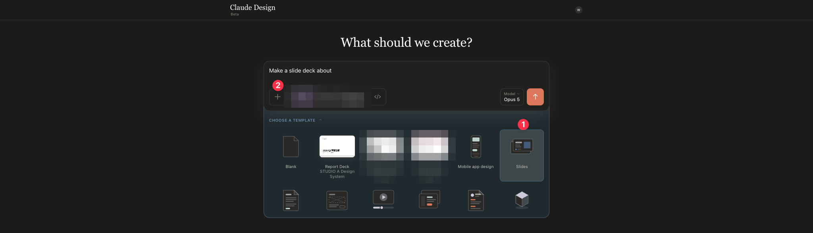
73
投影片 · 餵進 Design
投影片動手 ②
按下去 —— 讓它生。生的時候我們繼續。
照上一頁三步 —— 夾上你的內容稿、按 ↑。按出去就算完成，生成它自己跑。
生成要幾分鐘 —— 不用盯進度條。先回來看一件事：生出來的，還不像公司出的。你的那份，短下課收成。
全班都按出去就好 —— 卡住舉手。
03:00
74
投影片 · 開跑
投影片成品先看
生出來的 —— 長這樣。
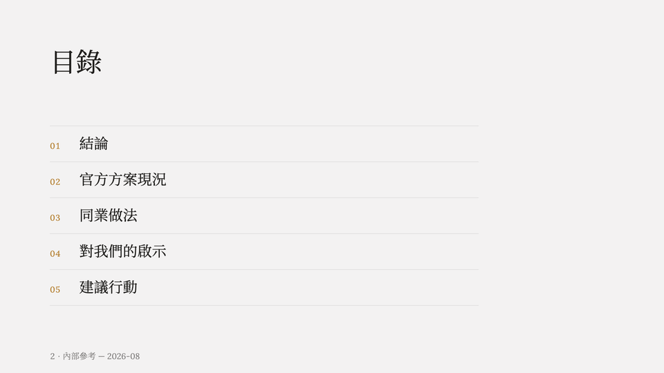
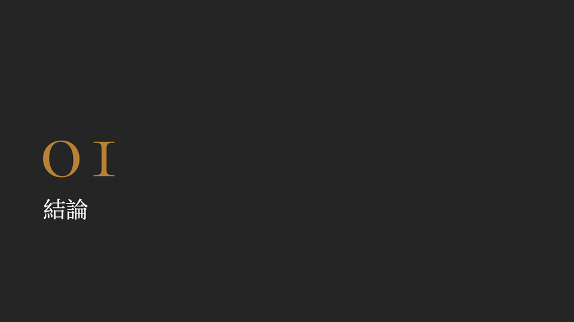
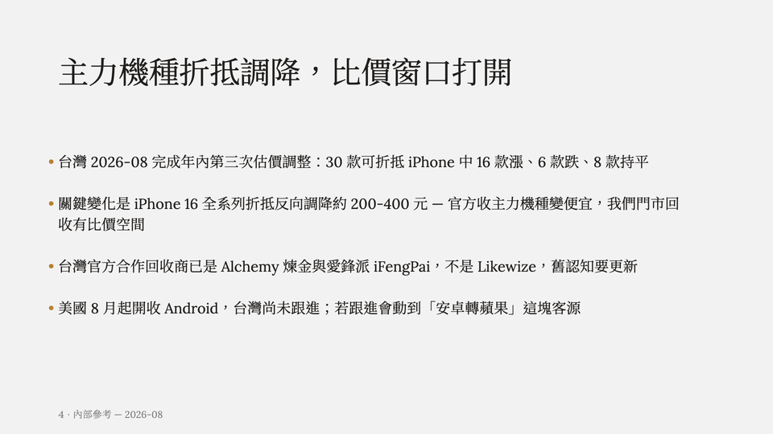
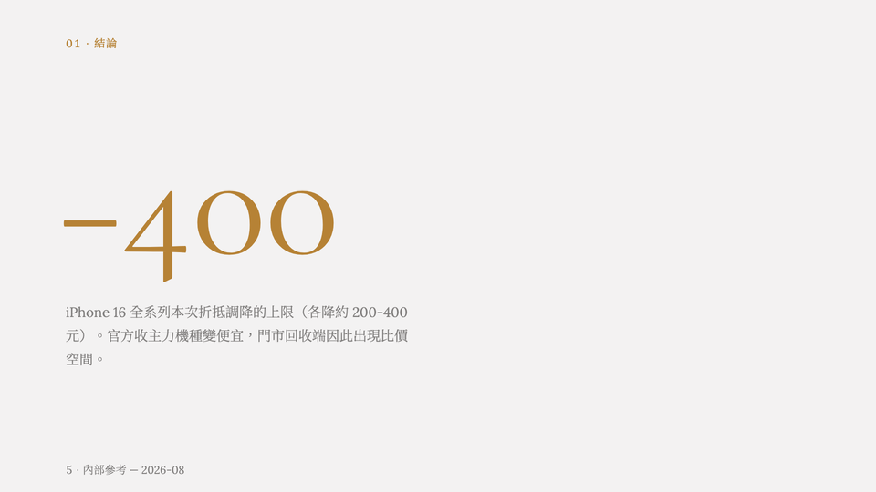
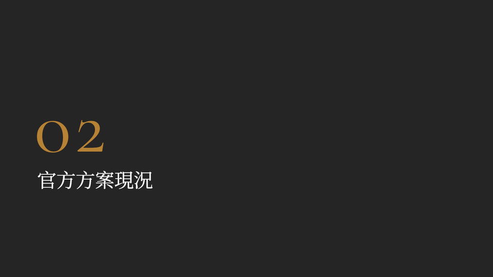
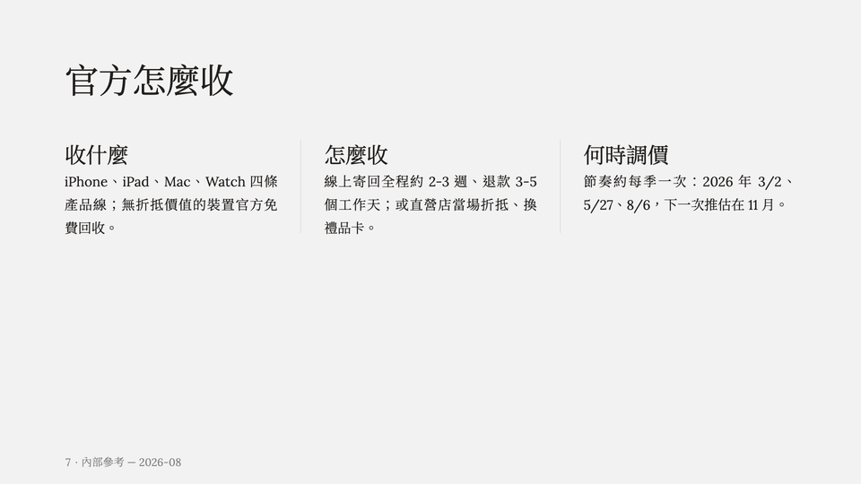
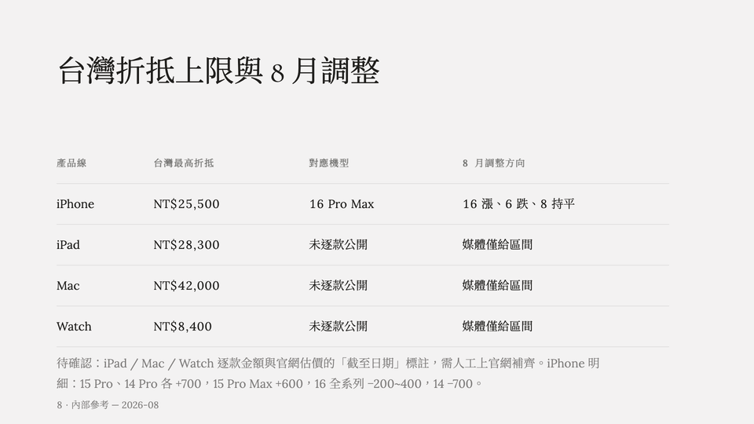
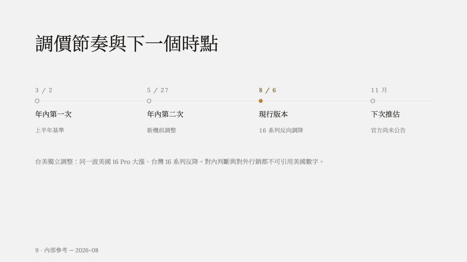
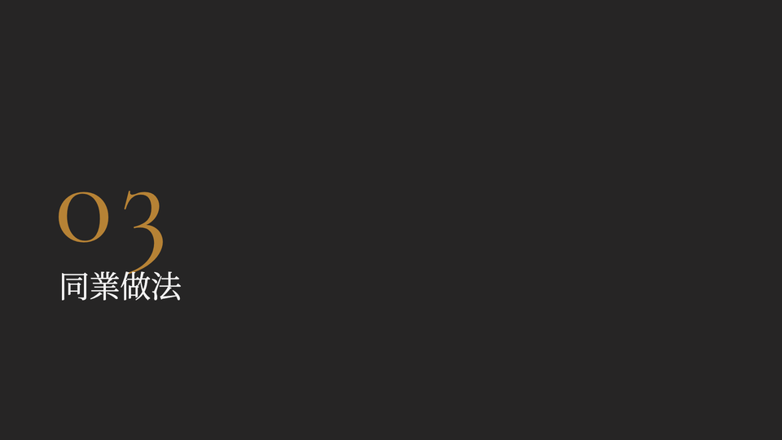
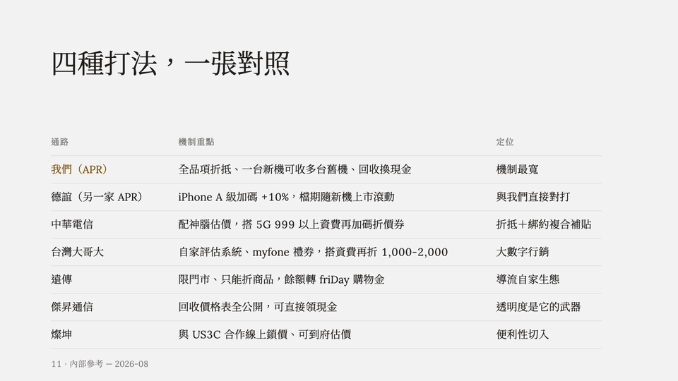
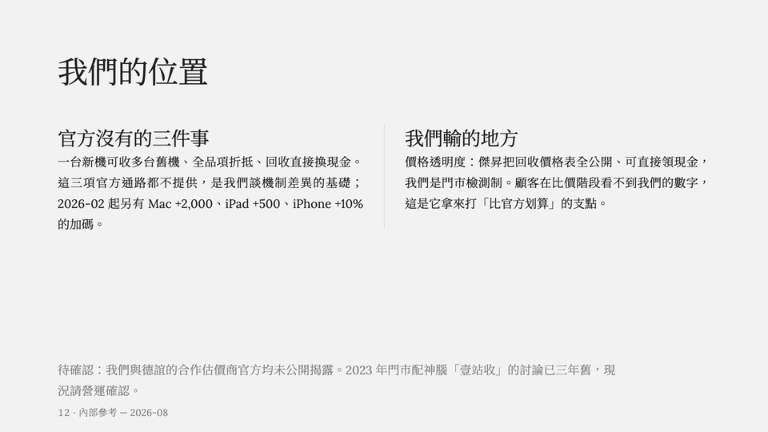
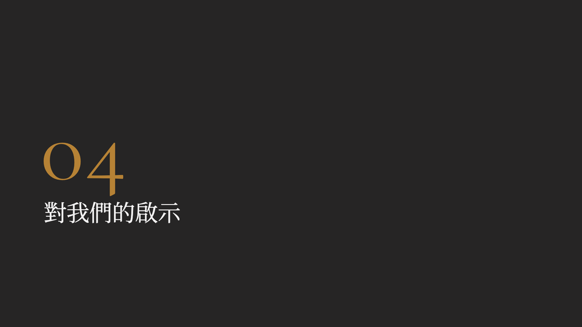
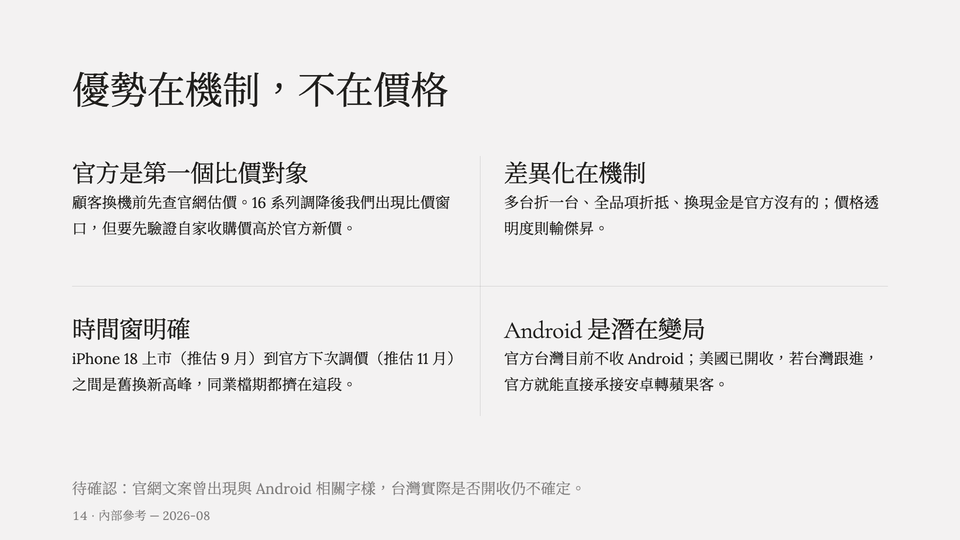
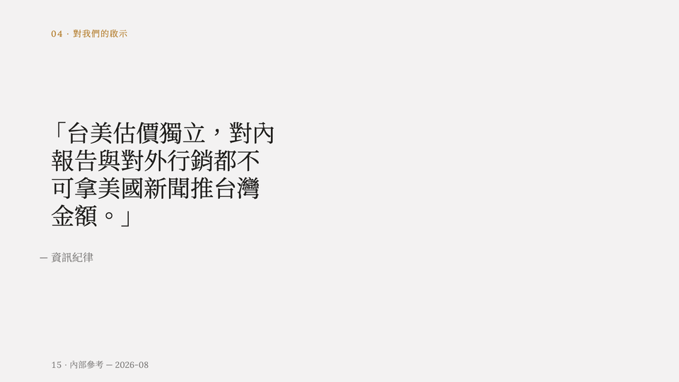
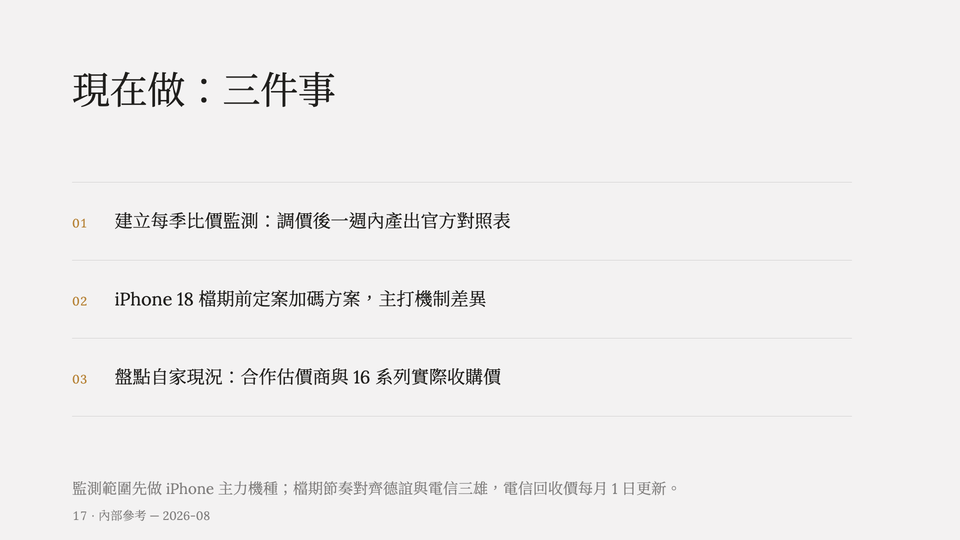
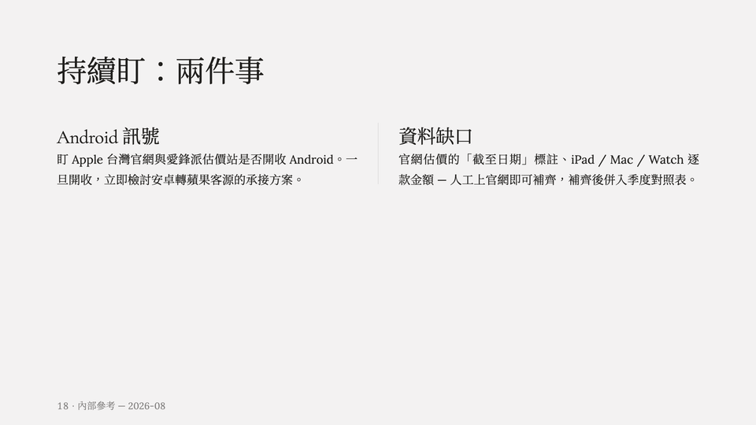
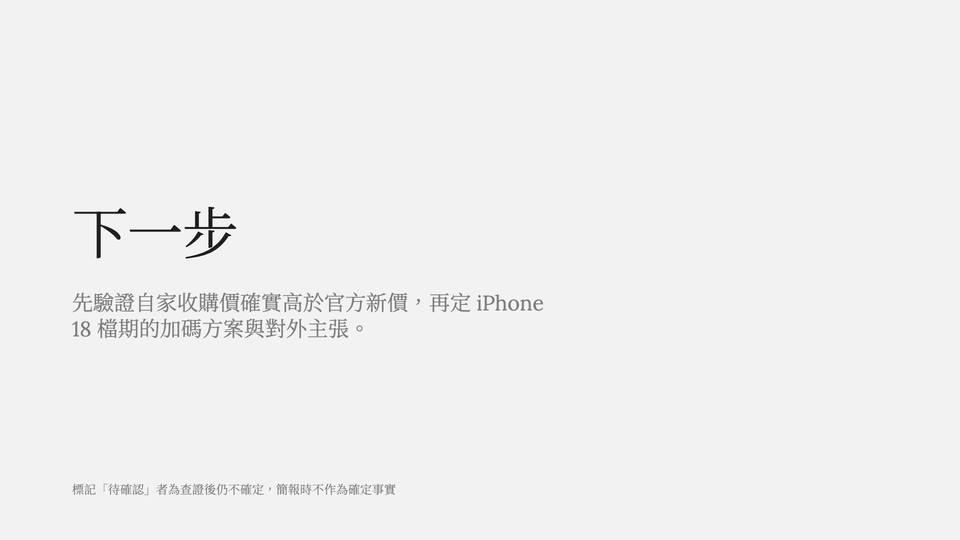
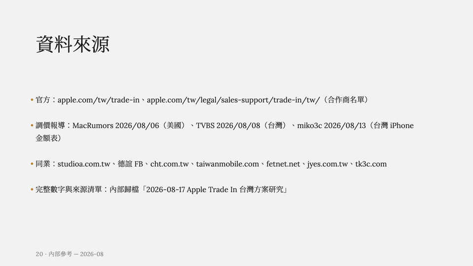
剛才那份內容稿是 5 段 —— 它排成 20 頁：分段、目錄、圖表、頁碼，全是它排的。你的還在跑，先看終點長怎樣。
75
投影片 · 成品
投影片差一步
像一份簡報了 —— 還不像 STUDIO A 出的。
乾淨、能看 —— 但少了品牌那層：一眼看出「這是 STUDIO A 出的」。差在三個地方 ——
字體
它自己挑的 —— 不是公司在用的那套
配色
好看 —— 但不是 STUDIO A 的那組
版式
通用的排法 —— 不是公司簡報的樣子
「這家公司長什麼樣」—— 有一份現成的規格。下一頁，交給它。
76
投影片 · 過渡
投影片公司的樣子
把「公司的樣子」交給它。
「公司長什麼樣」存成一套規格 —— logo、配色、字型、版型。Design 讀了它，整份自動變成公司的樣子。建一次、全公司用。
SA
logo
商標、放哪、留邊
配色
白 · 近黑 · 一點 A 藍
AaAa
字型
公司指定的那套黑體
間距 · 版型
大留白 · 一頁一重點
150
元件樣式
封面 / 大數字 / 卡片
⚠ Design 在網頁上，看不到你電腦裡 D1 裝的 studioa-design —— 同一套規格，這邊要再給它一次（檔案我們給你）。一份規格、兩邊用：報表像公司的，投影片也像公司的。
77
投影片 · DS
投影片動手
跟著做 —— 把 STUDIO A 的規格匯進去。
1
Design systems → Create design system

2
選 Create here

3
檔案拖進 Add fonts, logos and assets → Continue

4
按 Continue 後它生成 5-8 分 —— 好了勾 Published，全公司才用得到。生成讓它跑，先往下。

匯進去
05:00
78
投影片 · 匯入 DS
投影片套上
套上 —— 你那份換裝。

你的投影片專案 → ＋ → Design system
1
回你的投影片專案 → 點 ＋ → Design system → 選 STUDIO A
2
貼這句、送出：
> 用新的 design system 重新調整投影片
3
同一份內容 → 整份變 STUDIO A 的樣子（沒重做，只換裝）
生成完的現在套；還在生的 —— 看投影幕，你的好了再套。
03:00
79
投影片 · 套上
投影片before / after
同一份內容 —— 現在像公司出的。
套之前 · 乾淨、通用
套之後 · 一眼是 STUDIO A
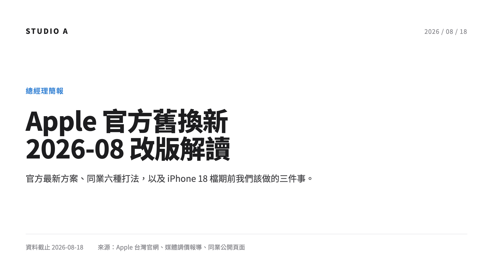
同一份內容稿 —— 換一套規格，出來就是公司的樣子。
80
投影片 · before / after
BREAK喘口氣
短下課 5 分鐘 ——
讓它把你的那份生完。
讓它把你的那份生完。
回來 —— 收成
81
投影片收成
打開看 —— 你查的東西，變一份簡報。
01
打開你那份 —— 一頁一頁翻過
02
還沒套規格的 —— 現在套（上一頁那句）
03
記一件「想改的」—— 換張圖、改句話、調個版，什麼都行
早上查的東西 —— 現在是一份拿得上月會的簡報了。
翻完，手上要有一件想改的 —— 帶去下一站。
05:00
82
投影片 · 收成
投影片動手 · 先開一次門
抓回來之前 —— 先跑一次 /design-consent。
照貼進 Claude Code · 跑一次就好
> /design-consent
這一步是把 Design 掛到你的登入 —— 網頁上的 Design 和你電腦上的 Claude Code，本來是兩扇門，這句讓它們互通。
跑的時候 · 三步
① 貼進 Claude Code、按 ENTER
② 照它的指示走完 —— 用上課這個 claude.ai 帳號
③ 看到完成訊息 —— 門開了
一次性 —— 跑過這次，之後抓都不用再授權。全班都看到完成訊息，才進下一頁。
83
投影片 · design-consent
投影片想再改
想改細節 —— 送回你的工作桌。
Design 負責「生」；要精修 —— 整份抓回 Claude Code，變成你電腦上可編輯的檔案，之後用說的改。
1
右上 Share → 捲到 More formats and apps

2
Your destinations 找 Claude Code → 按 Send

3
指令貼進 Claude Code → ENTER，整份下來

84
投影片 · 送回
投影片動手 ③
挑一件 —— 用說的改你那份。
剛剛翻的時候記了一件「想改的」—— 現在改它。想不到的，下面挑一個：
🖼️ 換張圖
「第 2 頁配一張手機的圖」
📝 講白話
「第 3 頁字太多 —— 講重點、少兩行」
🎨 調版面
「標題再大一點」「這頁圖縮小」
改完就是你的版本 —— 存著，月會直接用。
改一處就算過 —— 有時間再改第二處。卡住舉手。
08:00
85
投影片 · 動手 改
今天動手結束
東西都做出來了 ——
今天，收個尾。
今天，收個尾。
一批你查的卡、一個你造的 skill、一份你生的簡報 —— 下一頁，收攏成三句帶走。
今天 · 收尾
86
今天收個尾
今天三件事 —— 各帶走一句話。
回去照著用
① 知識管理 ——「[研究] 你的題目＋想知道什麼」→ 查完「[歸檔]」，存進 Atlas
打在 Claude Code
解的是 —— 上個月查的，這個月找不到。
② Skill —— 重複的事教會它一次：喊你取的觸發語（「跑◯◯週報」）→ 整套照跑
打在 Claude Code
解的是 —— 同一件事，每次都要重講一遍。
③ 投影片 ——「整理成內容稿」→ 帶到 claude.ai/design，整份生出來
Code → Design 網頁
解的是 —— 東西查好了，簡報還是一頁一頁自己做。
之後每遇到一件重複的事 —— 照「教它 → 複述 → 試做 → 固化」再教一課。系統跟著工作長。
87
今天 · 收個尾
收官最後一段
回顧這三天。
盤點三天做出來的、交代回去怎麼用 —— 最後真的收一次工。
收官 · 25 MIN
88
收官三天帶走的
三天做出來的 —— 都在這張桌上。
桌上 · 01
你的筆記本 —— D1 開的、D3 填滿
D1：開工、收工、自己的週報 —— 每天在跑。
D3 放進去：Atlas 一批卡、一個自造的 skill、一份你生的簡報。
D3 放進去：Atlas 一批卡、一個自造的 skill、一份你生的簡報。
桌上 · 02
部門的檔案 —— D2 上線
大家的頁面、部門的數字 —— 整個部門一起維護，系統一起跑。
89
收官 · 三天帶走的
收官回去自己用時
Claude Code 報錯 —— 看 code 就懂。
多半是暫時性的 —— Claude Code 會自動重試。看到下面這些，代表重試也沒救了，照右欄做。
CODE
意思
你該做什麼
401authentication
最常見沒登入 / 登入過期
跑 /login 重新登入
429rate limit
問太快、撞到自己的額度上限
等一下再問 —— 一次別同時丟太多件事
500server error
Anthropic 伺服器出錯 —— 不是你的問題
等一下重試（打一句「再試一次」就好）
529overloaded
最常見全平台過載 —— 不是你的問題、不扣額度
等幾分鐘；或 /model 換模型續用
400bad request
對話狀態亂掉、卡住
跑 /rewind 回上一步
Prompt
too long
too long
對話塞滿了（不是錯誤、是上限）
跑 /compact 壓縮、或 /clear 重開
記這兩個就好：529 是 Anthropic 那邊忙 —— 等等或換模型；401 是你沒登入 —— 跑 /login。
90
收官 · 報錯自救
收官最後一次動手
最後一次動手 —— 真的收工。
照貼 · 三天的最後一個動作
> 收工
它會把今天記下來 —— 明天開工，接著走。
03:00
91
收官 · 真實收工
END · D3結業
D1 你的 AI 工作環境 ·
D2 部門的儀表板與資料庫 ·
D3 教它新本事的能力。
D2 部門的儀表板與資料庫 ·
D3 教它新本事的能力。
把你的做法，變成它的本事 —— 之後，是你們在跑。三天，謝謝你們。
走之前最後一件事 —— 2 分鐘匿名回饋，讓下一梯更好：flux-course-survey.pages.dev
D1 · D2 · D3 —— 結業
92